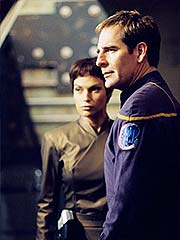
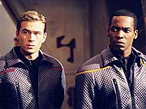
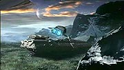
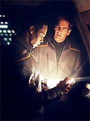
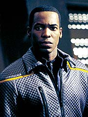
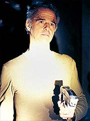
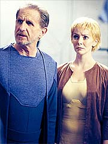
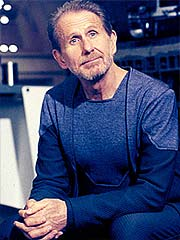
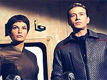

Episódio
anterior | Próximo
episódio
Sinopse:
A Enterprise convida a bordo D'Marr,
um mercador espacial de uma espécie desconhecida, na esperança
de que ele possa ajudar Tucker a conseguir o material que ele
precisa para vedar rupturas no casco e algumas peças
sobressalentes. D'Marr diz que não tem o que eles procuram, mas há
uma nave em um planeta próximo que poderia fornecer o que eles
querem. Não é de mercadores, mas sim uma nave acidentada, sem
sobreviventes. D'Marr entretanto avisa Archer de que a nave em
questão está assombrada pelos espíritos dos tripulantes mortos.

Depois que o
mercador parte, Archer decide dar uma olhada na tal nave, na
superfície de um planeta naquela região. Os sensores indicam que
ela possui bastante dos materiais que Tucker precisa. O capitão
decide ir a bordo e dar uma olhada. Do grupo de descida,
Mayweather parece estar mais apreensivo e incomodado com a situação.
Para tranquilizá-lo, Archer garante que não levarão nada, caso
constatem que há alguém ou alguma força que queira isso.
Ele, Mayweather, T'Pol e Tucker abordam a nave. Os dois primeiros
vão em busca de informações sobre a nave, enquanto a outra
dupla procura pelos materiais de que precisam. Às escuras, eles
vagueiam pelos corredores, até que a Vulcana ouve barulhos e
acredita que haja alguém lá. Tucker acha que ela está
imaginando coisas, até os dois verem um vulto passando perto
deles. Ele se comunica com o capitão e persegue o vulto, até
chegar em um beco sem saída. Investigando o local, eles descobrem
uma porta. O equipamento de T'Pol não consegue fazer leituras de
dentro daquele compartimento, e por isso os dois se esforçam para
abrir a porta.

Depois
de vencer o obstáculo, os dois se vêem em uma espécie de
arboreto --um ambiente totalmente diferente da parte sombria e
escura da nave. Caminhando por entre as plantas, Tucker vê uma moça
alienígena, mas quando ele tenta se comunicar, ela foge. T'Pol
vai na direção dele, mas antes que possam fazer algo, eles são
rendidos por um grupo de alienígenas armado. Archer e Mayweather
são localizados e levados para lá também.
Naquelas circunstâncias se dão as apresentações. Um deles,
Kuulan, se diz o capitão da nave acidentada, pertencente à raça
dos Kantare. Ele afirma que seu grupo está lá há três anos, e
que não conseguiram colocar a nave para funcionar desde então.
Evitaram contatos com o mundo exterior para não chamar a atenção
de seus atacantes, que, em uma batalha, causaram a queda da nave.
Archer oferece sua tripulação para ajudar a consertar a nave. Em
princípio, Ezral, o engenheiro-chefe alienígena, não concorda,
mas acaba cedendo à oferta. Tucker passa então a trabalhar nos
motores da nave alienígena. Ele é acompanhado por Liana, a jovem
que ele havia encontrado anteriormente. Ela é filha de Ezral, e
se mostra uma ajudante prestativa nas atividades de reparos. Os
dois começam a se dar bem, o que de pronto desperta a atenção
de T'Pol. Em um momento oportuno, ela pede a Tucker que tome mais
cuidado desta vez --a última vez que fez uma "amiga"
durante uma missão de reparos, Tucker acabou grávido de uma
criança dela. O engenheiro, entretanto, acha que a Vulcana está
exagerando.
Os dois seguem trabalhando, mas há um momento em que Tucker
precisará consultar os computadores da Enterprise. Ele deve
voltar a bordo, e aproveita a ocasião para convidar alguns
Kantares para um tour em sua nave. Liana de pronto se oferece, mas
Ezral não quer permiti-la. Após alguma insistência, ele
autoriza sua visita. Lá, Tucker mostra a ela todas as dependências
da nave, e os dois começam a se dar cada vez melhor. Enquanto
isso, T'Pol segue trabalhando na nave Kantare.

Na Enterprise,
Malcolm Reed não está satisfeito com as respostas dadas pelos
alienígenas. Após algumas análises, ele mostra ao capitão evidências
de que a nave Kantare não sofreu um ataque, mas sim uma falha
interna catastrófica de seus sistemas. O veículo não estaria no
planeta há três anos, mas sim há 23. As informações são
confirmadas por Hoshi Sato, após a tradução dos registros
trazidos da nave Kantare. Eles também encontram em órbita um
casulo de fuga em órbita, disparado da nave logo após o
acidente. Ao trazerem a bordo, o tripulante está morto --apesar
de Tucker tê-lo visto momentos atrás vivo e bem, na superfície
do planeta.
Intrigado pelas mentiras alienígenas, Archer chama Tucker e
pergunta se Liana lhe contou algo. Tucker mal pode acreditar que
ela estava mentindo para ele, e decide confrontá-la. Quando o
engenheiro pergunta a ela o que está havendo, ela só pede para
ser levada de volta à sua nave.
Enquanto isso, T'Pol parece ter obtido, por seus próprios meios,
as respostas que Archer e Tucker procuram. Ela decide voltar à
Enterprise para reportar suas descobertas, mas os alienígenas a
impedem. Quando Tucker chega com Liana à nave Kantare,
acompanhado por Archer em um grupo de descida, os humanos são
detidos e Tucker é obrigado a trabalhar em um sistema forçosamente,
junto com T'Pol. Os alienígenas obrigam os demais a partir.

Inconformado,
Archer decide rapidamente preparar um plano de resgate de seus
dois oficiais capturados. Junto com Reed, eles descem novamente ao
planeta e invadem a nave, tentando chegar a Tucker e T'Pol.
Enquanto uma verdadeira corrida de gato e rato acontece pelos
corredores da nave alienígena, Tucker só ouve os disparos e pede
que Liana termine com tudo isso --ela poderia evitar o
derramamento de sangue.
Persuadida a ajudá-lo, ela desativa três sistemas do painel
optotrônico em que estão trabalhando, e o resultado é que toda
a tripulação alienígena desaparece, à exceção de Liana e seu
pai Ezral. Numericamente inferiorizado, Ezral explica que recriou
holograficamente sua tripulação depois que eles foram mortos em
um acidente que ele considera culpa dele. Pede por favor para que
os tripulantes da Enterprise apenas consertem o sistema holográfico
e partam, deixando ele e sua filha viverem em paz, como fizeram
nos últimos 23 anos.
Tucker, entretanto, está abismado com a situação, e acusa Ezral
de ser egoísta, limitando propositalmente a chance de Liana de
conhecer outras pessoas e outros mundos, prendendo-a no seu próprio
universo de mentira. Ezral parece impassível, mas o discurso fez
um efeito nele.

Algum tempo
depois, Archer está de volta a sua nave e recebe uma visita de
Ezral. Ele comenta sua situação, sua relação com Liana e a
impressão que teve do engenheiro Tucker. Acaba decidindo que está
realmente prejudicando Liana e deve seguir com sua vida. Pede que
Archer forneça a ele algumas peças para que ele possa consertar
sua nave e partir. O capitão da Enterprise concorda e fornece a
ele o que ele precisa. Archer até insiste em ajudar nos reparos,
mas Ezral diz que sua tripulação holográfica pode cuidar disso.
Em vista disso, só resta a Tucker se despedir de Liana, o que ele
faz com um beijo, antes de a Enterprise seguir em frente com sua
missão.
Comentários:
"Oasis" seria um episódio muito bom, não
fosse por duas coisas. Em primeiro lugar, ele começa com um tom e
depois pula para um gênero completamente diferente --um que já
é mais velho que andar para frente em Jornada nas Estrelas,
diga-se de passagem.
O princípio é pautado pela diretriz básica dos produtores para Enterprise
--uma série mais envolta nos terrores e medos de viajar pelo espaço.
Nada melhor que representar isso com uma história de assombração
à moda antiga. O prólogo do episódio promete isso de forma
bastante interessante, e o clima se sustenta ao longo dos
primeiros minutos.

Enquanto
há um mistério a ser investigado, a coisa se mantém
interessante, apesar do excesso de mais tomadas na escuridão dos
cenários, um efeito que Enterprise tem usado em excesso e
nos momentos errados. Em compensação, assim que os fantasmas se
tornam pessoas reais (pelo menos é o que pensavam os tripulantes
da Enterprise naquele momento), a premissa do episódio
simplesmente cai por terra.
Passamos então a uma emocionante nova premissa: Tucker ajuda seus
amiguinhos Kantare a consertar sua nave. Não há nada mais
desinteressante do que acompanhar um engenheiro consertando uma
nave de uns alienígenas com maquiagem boba e caracterização do
mesmo nível. Até que o segundo mistério se estabeleça, com as
descobertas de Reed na Enterprise, o episódio cai abismalmente de
rendimento.
O que nos leva ao segundo grande problema do episódio. A resolução
do segundo mistério é simplesmente a reciclagem de um episódio
que já foi feito antes, durante o segundo ano de Deep Space
Nine: "Shadowplay".
Não é à toa que Rene Auberjonois achou esse roteiro de Enterprise
bem parecido com o material que ele pegava em DS9.

Em "Shadowplay",
Odo e Dax encontram uma comunidade em um planeta que é toda
gerada por holografia, embora eles só descubram isso no fim,
quando tentam descobrir por que há membros do grupo desaparecendo
sem deixar vestígios. Em "Oasis", temos
exatamente os mesmos elementos --pessoas holográficas recriadas
para satisfazer a fantasia de uma única pessoa, um defeito no
equipamento que está prejudicando a tal comunidade fotônica e um
grupo de exploradores bisbilhoteiros que vai ajudar a colocar tudo
nos eixos novamente, após 45 minutos.
Depois de mais de 600 episódios produzidos, é até difícil
conceber que os roteiristas vão conseguir se sair com idéias
100% originais e nunca vistas antes. Mas, se a idéia é reciclar,
é bom que se faça bem feito. No caso de "Oasis",
não deu certo; o original de DS9 é melhor. Isso por várias
razões: a principal é que o de DS9 tinha um foco e uma
história muito mais tocante e bem arranjada. Já o de Enterprise
parece uma soma de pequenas tramas que se emendam para chegar a
esse resultado final.
Algumas tentativas de trabalhar fantasmas em Jornada já foram
feitas ao longo dos anos. Em geral, são todas catastróficas. "Oasis"
poderia muito bem fazer melhor que isso, mas optou pela solução
tradicional e pelo clichê. Se o clichê ainda fosse bom. Mas é o
tipo da coisa que não funciona em Enterprise.

Já é
a segunda vez que vemos holografia com qualidade de holodeck na série.
Desta vez, Tucker chega até a consertar o sistema Kantare! É
inconcebível que os humanos levem mais 200 anos para desenvolver
essa tecnologia, depois de descobrir que metade da galáxia já a
tem e, destes, metade deixou Tucker fuçar no equipamento. Mais
uma pisada de bola dos produtores com relação à continuidade
histórica da série. E tudo por falta de criatividade para
encontrar uma solução melhor.
O que não é difícil, realmente. Eles poderiam explorar um
recurso menos tecnológico e mais misterioso, como foi feito em "The
Survivors", da terceira temporada de A Nova Geração.
Lá, um ser recriava à vontade sua esposa morta, sua casa, naves
no espaço, tudo com a força do pensamento. Até essa solução
barata seria melhor que mais hologramas.
Problemas de roteiro e história à parte, há qualidades a se
destacar. A maior delas, como não poderia deixar de ser, é a
presença de Auberjonois. O ator tem uma presença que consegue
abrilhantar até o pior dos diálogos. E ele trabalha bem o
material que tem em mãos aqui, dando vida ao único personagem
convidado realmente tridimensional do episódio.
Liana é a Kes, reciclada. Não só em aparência, mas também em
atuação branda e pouco expressiva. E seu affair com Tucker não
ajuda nada o episódio. Muito ao contrário, só mostra o quanto
está difícil se sair com lances criativos em Enterprise.
Pelo menos a situação rendeu uma boa participação de T'Pol,
que recrimina o engenheiro por suas "experiências de reparos
anteriores". Foi uma boa aparição da Vulcana, que está
oscilando entre bons e maus momentos ao longo dos episódios.

Por incrível que
pareça, Mayweather foi ligeiramente beneficiado aqui.
Interessante sua oposição à abordagem da nave assombrada. Não
que isso possa ser qualificado como desenvolvimento genuíno de
personagem, mas em se tratando de Mayweather, é bem o caso de
abrir uma champagne. Felizmente ele terá um pouco mais a dizer no
próximo episódio, "Detained".
A direção fracassa na tentativa de criar o clima sombrio e
supostamente assombrado da nave abandonada. Não basta apagar as
luzes para criar esse ambiente, e o diretor Jim Charleston pagou o
preço por isso. De resto, ele fez o que podia fazer, dado o
material pouco atrativo do episódio.
A maquiagem Kantare está sonolenta, embora seja compreensível a
decisão dos produtores de deixar os alienígenas o mais humanos
possível, para que Tucker pudesse se sentir atraído por Liana.
Agora, Michael Westmore está de parabéns pela maquiagem de D'Marr,
o mercador alienígena. Fazia tempo que não víamos um alienígena
tão interessante. Ele não só é criativo (não se parece com
nada do que vimos antes), mas também tem um ar nostálgico e
ligeiramente "cheesy" que nos faz crer que poderíamos
muito bem encontrar um bicho desses numa era pré-Kirk. Westmore
acertou em cheio com o tom verde claro da pele e as próteses bem
diferentes. Em termos técnicos, apesar das belas tomadas de
efeitos especiais, a maquiagem de D'Marr levou o primeiro prêmio.
No final das contas, "Oasis" é um episódio
capaz até de fornecer entretenimento. Mas não espere encontrar
algo original ou extremamente empolgante por aqui. É um segmento
morno, de uma série que até aqui, tirando um ou dois episódios,
está exatamente assim: morna.
Citações:
T'Pol - "The
last time you found someone this competent, you ended up carrying
her child."
(Da última vez que você encontrou alguém tão competente,
acabou carregando a criança dela.")
Archer - "What happened to your crew?"
("O que aconteceu com sua tripulação?")
Ezral - "They're gone, captain. Isn't it obvious?"
("Eles se foram, capitão. Não é óbvio?")
Archer - "Your real crew."
("Sua tripulação real.")
Ezral - "They didn't seem real to you?"
("Eles não pareciam reais para você?")
Tucker - "What are you going to do if she gets hurt? Make
a... holographic doctor?"
("O que você vai fazer se ela se machucar? Fazer um...
doutor holográfico?")
Trivia:
 É a segunda aparição de um ex-regular de Jornada em Enterprise.
A primeira foi em "Acquisition",
com Ethan Phillips (Neelix) interpretando um Ferengi. Agora é a
vez de Rene Auberjonois (Odo).
É a segunda aparição de um ex-regular de Jornada em Enterprise.
A primeira foi em "Acquisition",
com Ethan Phillips (Neelix) interpretando um Ferengi. Agora é a
vez de Rene Auberjonois (Odo).
Quem mais falou do episódio
em entrevistas foi o próprio Auberjonois. Ele definiu seu
personagem como "interessante e muito legal". "Eu não
uso nenhuma maquiagem pesada. Sou um alienígena mas tenho, meio
que, pintas na minha testa e levou bem menos tempo que Odo. Minhas
duas grandes cenas foram com Scott [Bakula], o que foi ótimo
porque ele é um dos mais quentes e receptivos atores. Eles
realmente influenciou a sensação toda do episódio."
O ator comparou seu
personagem a o de um clássico de Shakespeare. "Ele só está
equivocado. Ele é o tipo de personagem Prospero --Prospero de 'The
Tempest'--, com sua filha, vivendo neste planeta ou asteróide. E
junto vem a Enterprise."
Em uma entrevista,
Auberjonois aludiu à semelhança entre este episódio e outros
que ele fez antes em Jornada. "Foi déjà vu tudo de
novo. Estivemos sobre os palcos de Voyager, com a mesma
equipe, muitas das mesmas faces, e muito do mesmo roteiro!"
Connor Trinneer também
falou do episódio, mas falou pouco: "Eu finalmente consigo
conhecer uma garota", diz.
Rudolph Willrich
apareceu antes em Jornada, como Reittan Grax, em "Menage
a Troi" (A Nova Geração), e como um comandante
Boliano da Academia da Frota, em "Paradise Lost"
(Deep Space Nine).
Ficha
técnica:
História de Rick Berman
& Brannon Braga &
Stephen Beck
Roteiro de Stephen Beck
Direção de Jim Charleston
Exibido em 03/04/2002
Produção:
020